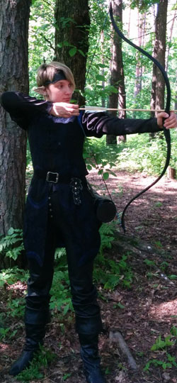

Личная страница Элеф
Статус: Лларар
Любимое оружие:
Lukbis Diana
История Элеф
Элеф Луанолу Ирэдил появилась на свет в королевстве Вэльдрин .Её отец- Келноли'фэйн Алинас был известным менестрелем, а маму Эрэдил'висс Аркэнэтт знали в родном городе и за его пределами ,как искусную вышивальщицу. Все произведения Эрэдил не только украшали, а и защищали своего владельца , приносили ему удачу.
В детстве Элеф вместе со своим братом Илфрином училась стрелять из лука, фехтовать и играть на музыкальных инструментах. Еще Элеф очень любила рисовать , а её рисунки могли оживать. Вместе с братом они ходили к своему прапрадедушке Вэлверрину, который жил в лесу и понимал язык всего живого, позже эта способность проявилась и у Элеф .
Кроме занятий музыкой, изобразительным искусством и магией Элеф изучала различные растения, она любила сама собирать их в лесу, а также комбинировала сорта садовых и полевых цветов и высаживала их возле домов и в домах, а также помогала Вэлверрину следить за порядком в лесу.
Чтобы продолжить свое образование Элеф решила отправиться в Широкую Скамью. Там была академия искусств, в которой она хотела учиться. А еще в этом городе жил известный друид Маджин специализирующийся на различной флоре и фауне и эльфийка хотела пойти к нему в подмастерья.
Путь её лежал через Лес . Эльфийка знала дорогу и первую половину пути прошла очень быстро. Но это была бы не Элеф если бы она не начала следить за полетом птиц, или ну не могла она не обратить внимания на то как ультрамариновые, фиолетово-красные, зеленые листья дикого винограда оплетают ствол древнего огромного дуба. И как тут не сделать привал , когда под ногами шуршит листьями ёжик и нагло требует чего-нибудь вкусненького. Пришлось делать привал, эльфийка очень устала и решила немножко поспать . ей приснилось что она находится в лесу , но это место было ей не знакомо. Уже была ночь . но не могла же она проспать так долго и такая непривычная тишина. Элеф посмотрела на луну и увидела как луч луны становится все ближе и ближе и вскоре в этом лунном сиянии она увидела светловолосую эльфийку с двумя мечами. Это была Эилистраее. Богиня добрых дроу поведала Элеф, что та здесь оказалась не случайно, ведь рядом лагерь разбойников, которые украли детеныша дракона у одного мага ,и надо освободить несчастное существо. Дракон закован в магический ошейник и поэтому не может летать и воспользоваться своей силой. Для усыпления бдительности негодяев Эилистраее дала Элеф специальный порошок и плащ невидимости. А с ошейником эльфийка должна была справиться сама. Очнувшись Элеф сперва подумала , что это все ей приснилось, но она проверила сумку и нашла там незнакомый коробок с порошком. А рядышком лежал черный плащ. Эльфийка прочитала заклинание на обнаружение живых существ и узнала, в какую сторону ей надо идти. Странно, но охранял дракона всего лишь один разбойник. Воспользовавшись плащом, девушка подошла ближе и посыпала негодяя порошком. Вскоре разбойник уснул, а Элеф стала искать дракона. Белый ящер был прикован к большому дереву, и ходил вокруг него, стараясь сбросить с себя магический ошейник, но у ничего не получалось. Элеф произнесла приветствие и подошла ближе, дракончик был очень удивлен, что ему хотят помочь, но так как эта эльфийка знает его речь он решил рассказать свою печальную историю. Пока он говорил Элеф думала как же справится с чарами ошейника. Заклинания ,которые она знала, не действовали. Тем временем Дракон -Мэрлин проголодался и полез в её сумку поискать что-нибудь вкусненькое ,а нашел кисточку и показал Элеф. Девушка обрадовалась, она придумала как ему помочь. Эльфийка растерла некоторые травы и с помощью кисти и приготовленного порошка нанесла руну разрыва на ошейнике , вещь покраснела и рассыпалась . Дракон очень обрадовался освобождению, и даже хотел поджарить разбойника, но надо было уходить пока не пришли остальные. И друзья решили отправиться в путь вместе , тем более им обоим надо было попасть в Широкую Скамью. Во время путешествия Мэрлин успел рассказать , что его друга-друида зовут Маджин( что очень обрадовало Элеф) , еще он рассказал, какой его друг замечательный и мудрый и вообще он слишком много успел рассказать( была бы покороче дорога и больше еды…) По прибытии в город друзья сразу отправились к Маджину. Элеф училась в Академии, одновременно изучала теорию и практику друида - драконолюба, а также украшала улицы и сады новыми видами растений.
Прошло несколько лет. Элеф закончила академию и решила поехать в родной город, повидать семью. Все очень обрадовались её прибытию, но дома не было брата. Ей сказали, что несколько лет назад Илфрин ушел обучаться военному и кулинарному делу и только недавно от него пришла весточка. Оказывается после обучения он женился и теперь живет в городе Сильвермун. Элеф решила навестить брата.
Путь лежал неблизкий через Лес, а потом еще горы. Повидав брата и вволю понянчившись со своей племяшкой, набрав гору вкусностей Элеф решила снова отправится в путешествие- тем более столько всего она ещё не видела (к тому же замечательная возможность поизучать флору и фауну Фаэруна ).
Путешествие по горным тропинкам , хоть и было и увлекательным, но оказалась весьма нелегким. К концу дня Элеф очень устала и ее внимательность снизилась. Поэтому когда она “случайно” встретила двух орков, это было для нее очень неожиданно. Хорошо что орки также не отличались особой внимательностью. Эльфийка увидела удобный выступ в скале и быстро взобралась на него. Потом она достала лук и выстрелила в одного из орков, раненный монстр упал, а второй погнался за Элеф. Орк схватил эльфийку, но ей удалось вывернуться и взобраться по скале вверх, а сумка осталась у него. Орку стало лень гонятся за эльфийкой и он решил проверить содержимое сумки. Раненный орк увидел добычу в руках у соплеменника, и естественно не мог оставаться в стороне. Когда они распотрошили сумку , раненный орк заметил выпавшую коробку с ягодами, хотел съесть их, но его друг с криком : “ Это моя добыча!”, выхватил ягоды и проглотил их. Раненный орк разозлился , дал несильно дубинкой по голове и отобрал сумку. Орки начали драться. Монстр, съевший все ягоды ( между прочим ядовитые, обжорство до добра не доводит) почернел и упал замертво. А другой расположился возле скалы и устроил засаду на эльфийку. Элеф осталась без снаряжения , ей ничего не оставалось как сидеть на скале и ждать пока орк уснет или уйдет.
В это время эльфийка Умбра возвращалась с задания и увидела орка , который явно сидел в засаде. Умбра оценила ситуацию и одним метким выстрелом решила проблему. Элеф увидела что враг мертв и решила спуститься вниз. Умбра подошла к мертвому орку , довольная своей меткостью. Эльфийки увидели друг друга. Элеф узнала свою давнюю подругу. Элеф поблагодарила за помощь и собрала свое снаряжение. Девушки разговорились. Умбра рассказала, что она сейчас в отряде горных рейнджеров и рассказала о том , чем они занимаются. Элеф заинтересовалась , спросила может ли и она присоединиться к ним. Умбра сказала , что она как–раз направляется к отряду и они могут пойти вместе.
Так Элеф попала в отряд горных рейнджеров.Теперь её путь совпадал с путем отряда.